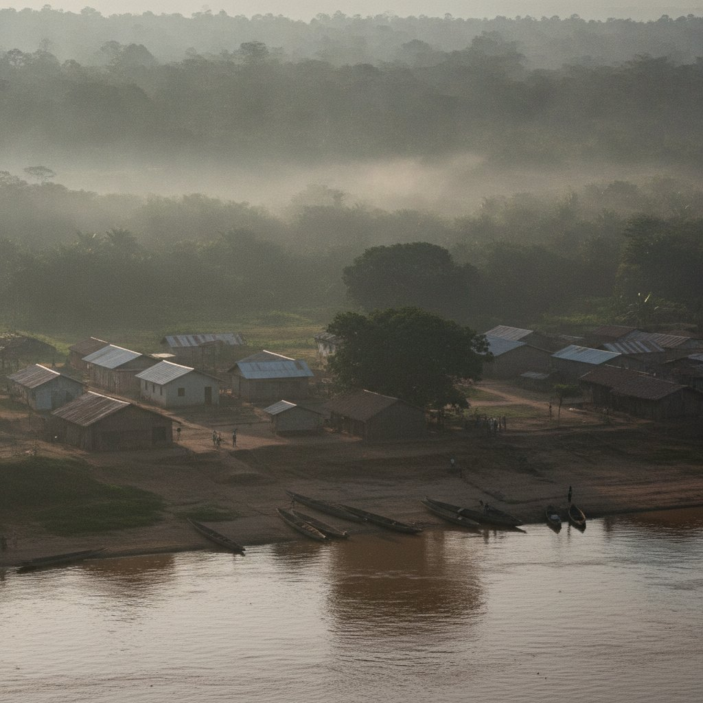

A farm
at Ibenga, since 2006.
What we are, what we do, and what we refuse to do. No stock photography, no invented figure.
A farm is a place and people. The place is called Ibenga. The people are those who live there.
We plant, we harvest, we press, we dry. Then we load the canoe. Everything that bears our name has passed through our hands.
We do not promise tonnes we do not have. We say what the season gives, and when.
What we do, and do not.
Two short columns are worth more than a page of values.
- Grow seven speciesOil palm, cocoa, safou, honey, pineapple, maize, vegetables
- Process on siteOil, cocoa, honey
- Sell directNo middleman
- Welcome visitorsVisits and training
- Buy to resellNothing from elsewhere
- Promise a volume without a harvestThe season decides
- Mix originsOne land, one name
- Hide what we do not knowThe brackets stay visible
Twenty years, in five dates.
Only the founding is established. The other milestones are to be provided by the farm; they replace the placeholders below.
- 2006
Founding of the farm at Ibenga, Enyellé district.verified · current website
- [ year ]
First cocoa plantings. Date and area to be provided.
- [ year ]
Pressing workshop brought into service. To be confirmed.
- [ year ]
First apiaries, first honey harvest. To be confirmed.
- [ year ]
First shipment outside the department. Destination to be provided.
The people of the farm.
No portrait is fabricated. Photographs, first names and roles are to be provided, with each person's consent.
to be provided
to be provided
to be provided
What we know, what remains to be measured.
A website that shows figures must be able to source them. These are given with their status.